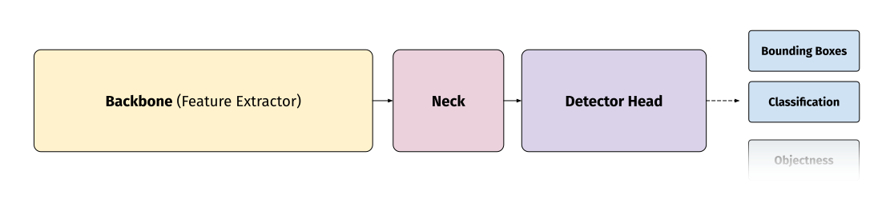

YOLO (You Only Look Once) was a convolutional neural network-based (CNN) object detection method made by Joseph Redmon.
It was one of the first CNNs that balanced real-time inference speeds and mAP performance with novel methods that would become staple in future
One-Stage Object Detection methods.
There have been multiple iterations made by many different people and groups over the years that have improved the speed and performance, with many
recent iterations of YOLO becoming mainstays in the object detection field both for researchers and developers.
The structure of different YOLO-based networks can differ greatly, but the most popular iterations (YOLOv3, YOLOv5, etc.) have the following structure:
- Backbone Network: This is typically another simpler, network that is being used to turn the input images into descriptive features maps for the
rest of the network to take and turn into detections. Examples for YOLO are Darknet53, CSP-Darknet, and ViT (YOLOS).
- Neck: This component is made up of a few layers that typically reproject, realign, or do some other operations to the backbone feature maps.
A simple example is a later addition to YOLOv3 - Spatial Pyramid Pooling.
- Detection Head: This "head" is where the network computes the final output (localization, classification, etc). Head structure heavily depends on the given network.
For example, YOLOv3's detection head is a simple stack of Convolution+ReLU+BatchNorm modules that produce a single set of detections (excluding multiple outputs from scaling).
Other networks, such as YOLOX, have a "decoupled" detection head that provides localization, classification, and other attributes with seperated stacks of the aforementioned modules.
